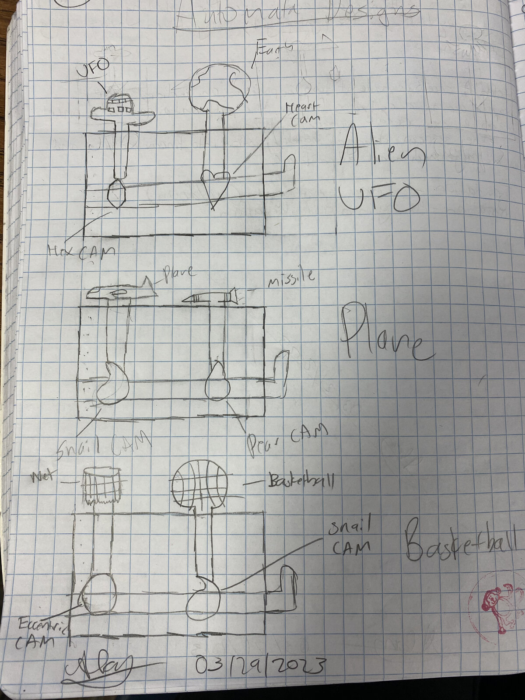
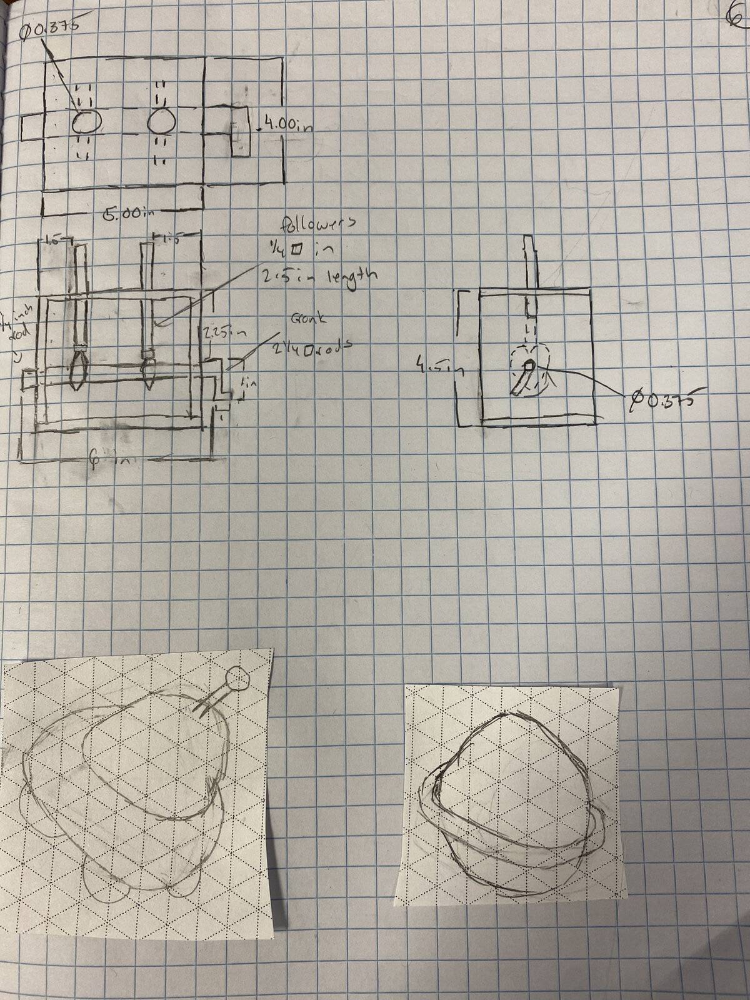
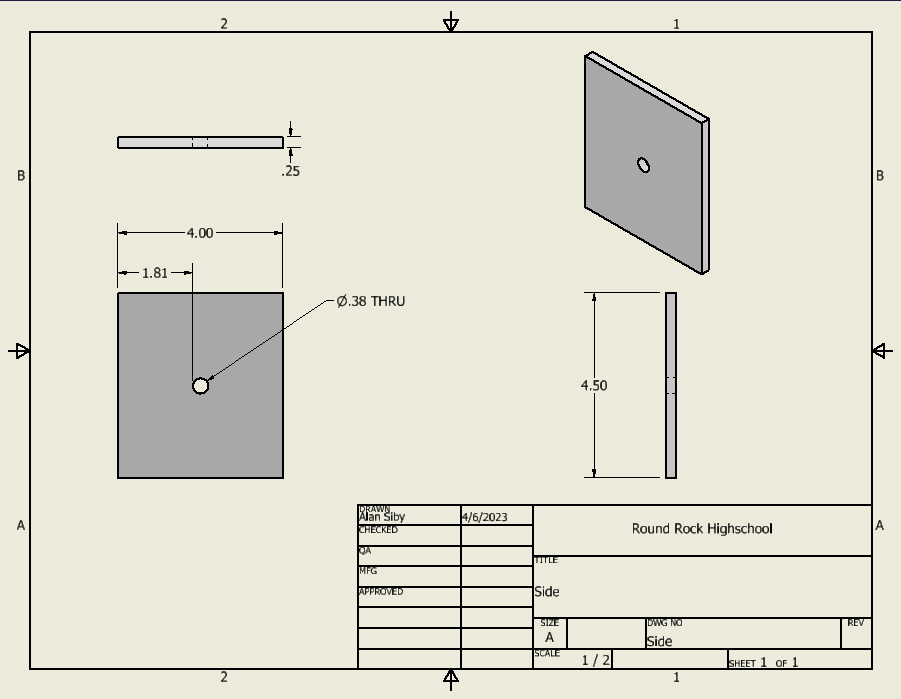
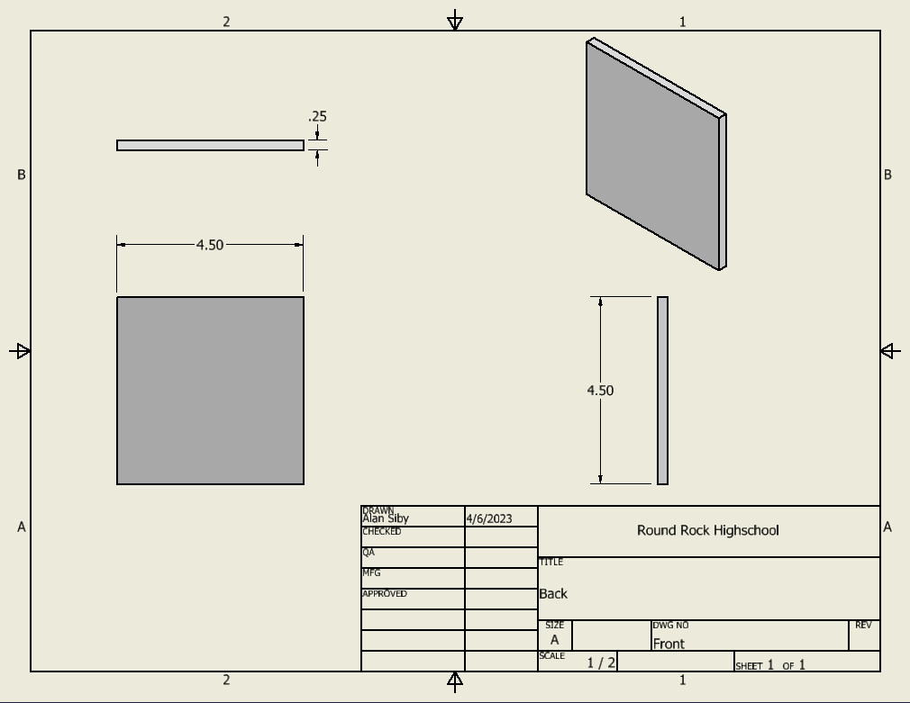
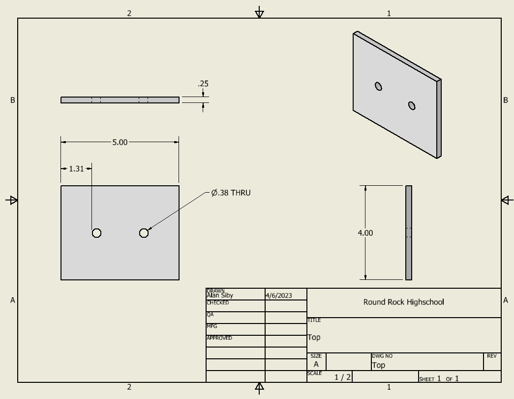
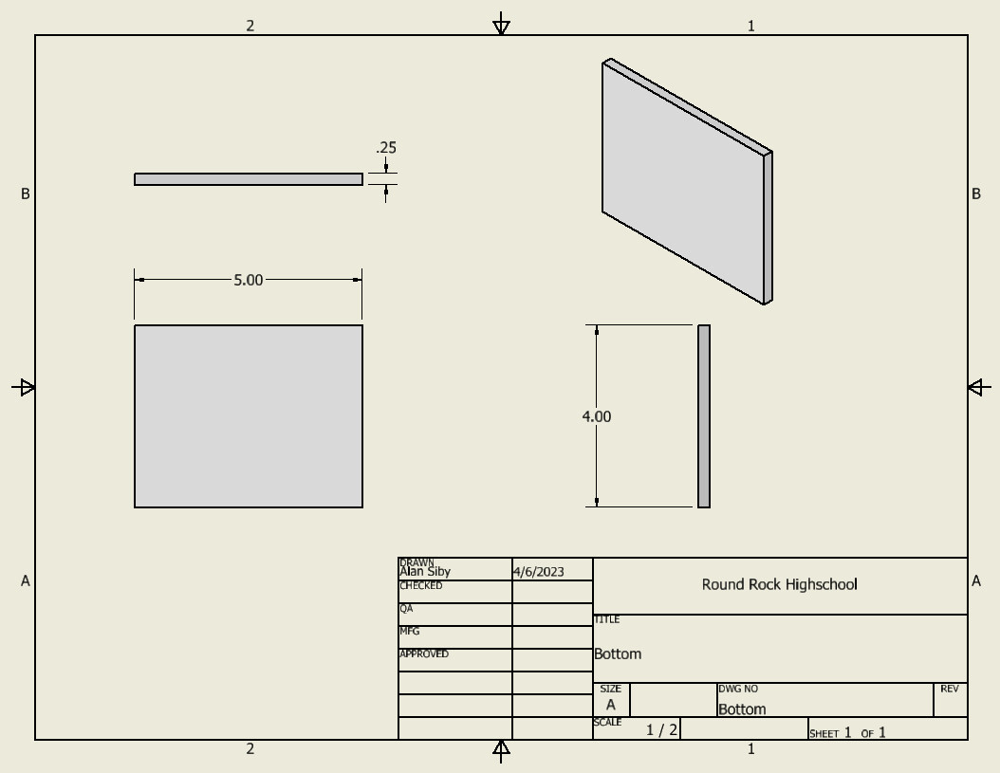
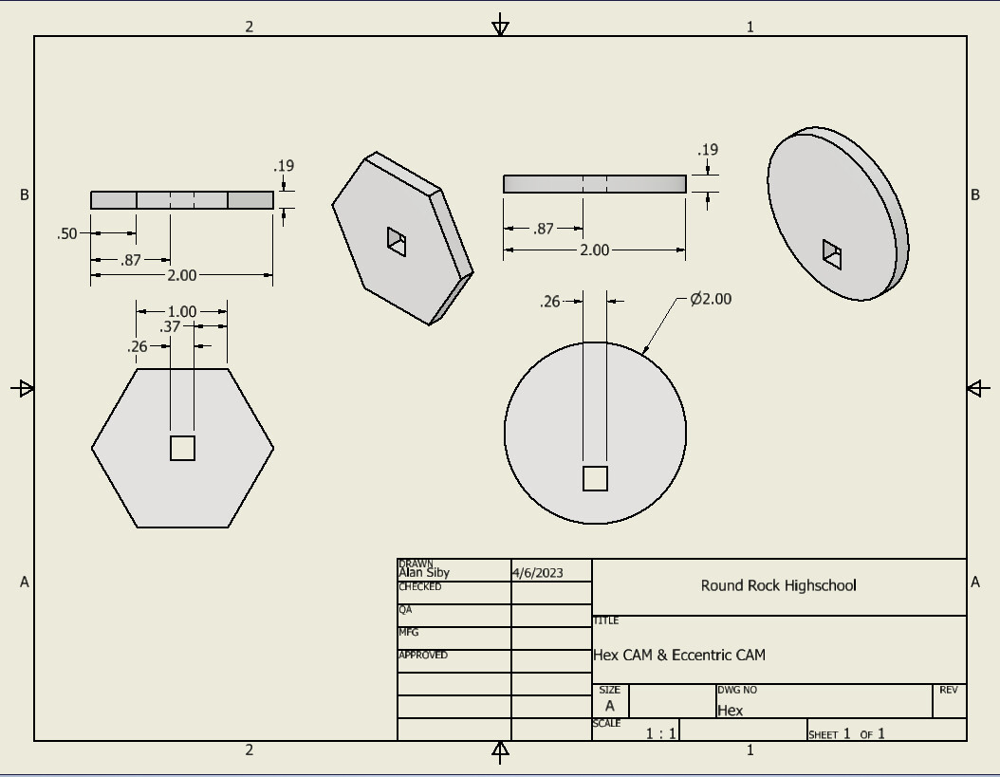
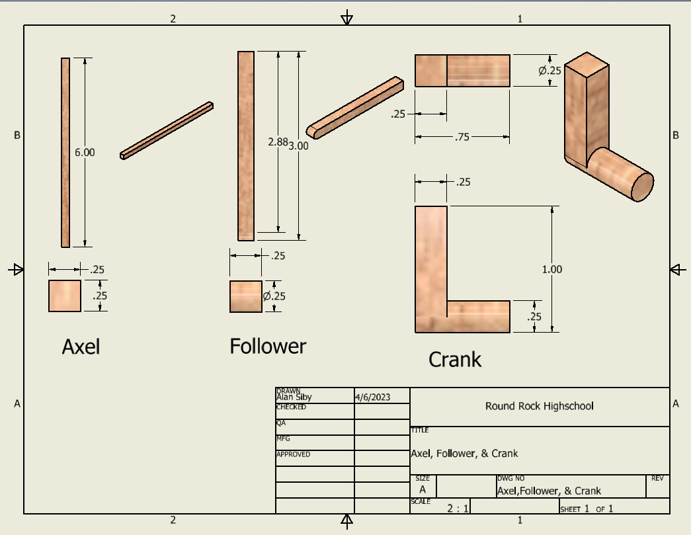

The finished mechanism in action — a rotating cam drives the follower to pop the alien figure up out of the UFO.
Overview
Cams are one of the simplest ways to turn continuous rotation into a repeating linear motion, and they show up everywhere from car engines to automated toys. For this project, I designed a cam-and-follower mechanism in SolidWorks, then built a working physical model: a small wooden box housing a rotating cam that drives a follower rod up and down, animating an "Alien UFO" figure on top.
Concept Sketches
Before modeling anything, I sketched a few different toy concepts built around different cam profiles — including a heart-cam alien, a snail-cam plane, and an eccentric-cam basketball — and worked out rough dimensions for the housing and followers before settling on a final design.


SolidWorks Assembly
I modeled the full assembly in SolidWorks — a box formed from side, front/back, top, and bottom panels, housing a rotating axle with a hex cam and eccentric cam, a follower, and a hand crank — then produced a full set of dimensioned drawings for manufacturing.

Part Drawings
Each part was drawn and dimensioned individually, from the box panels to the cam profiles and the axle, follower, and crank.






What I Learned
This project was my first time taking a mechanism all the way from a rough sketch to a fully dimensioned SolidWorks assembly to a physical, working build. Figuring out how a cam's profile translates directly into the follower's motion — and seeing that relationship play out in the finished toy — made the underlying math and geometry click in a way that just modeling it on screen hadn't.